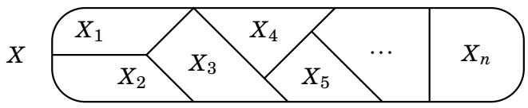
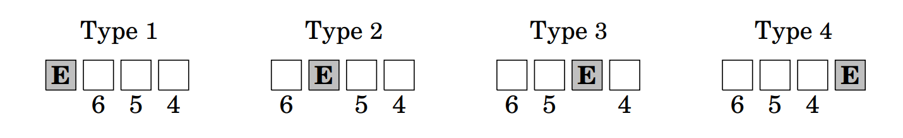
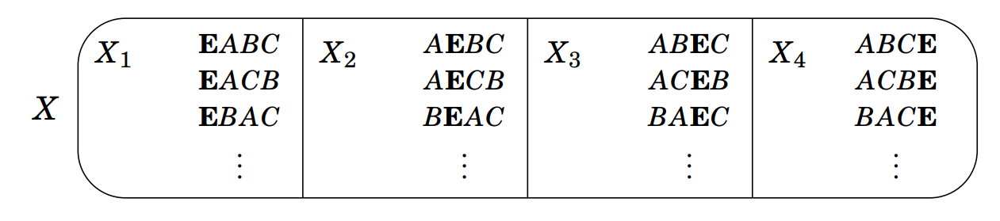
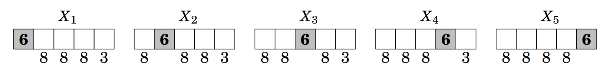
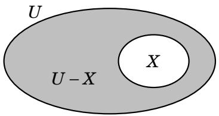

3.3 The Addition and Subtraction Principles¶
We now discuss two new counting principles, the addition and subtraction principles. Actually, they are not entirely new—you’ve used them intuitively for years. Here we give names to these two fundamental thought patterns, and phrase them in the language of sets. Doing this helps us recognize when we are using them, and, more importantly, it helps us see new situations in which they can be used.
The addition principle simply asserts that if a set can be broken into pieces, then the size of the set is the sum of the sizes of the pieces.
Fact 3.2: (Addition Principle) Suppose a finite set \(X\) can be decomposed as a union \(X = X_{1} \cup X_{2} \cup \cdots \cup X_{n}\) , where \(X_{i} \cap X_{j} = \varnothing\) whenever \(i \neq j\). Then \(\left| X \right| = \left| X_{1} \right| + \left| X_{2} \right| + \cdots + \left| X_{n} \right|\).

In our first example we will rework an instance where we used the addition principle naturally, without comment: in Part (c) of Example 3.3.
Example 3.5: How many length-4 non-repetitive lists can be made from the symbols \(A , B , C , D , E , F , G\), if the list must contain an \(E\)?
In Example 3.3 (c) our approach was to divide these lists into four types, depending on whether the \(E\) is in the first, second, third or fourth position.
{kind=link}

Then we used the multiplication principle to count the lists of type 1. There are 6 choices for the second entry, 5 for the third, and 4 for the fourth. This is indicated above, where the number below a box is the number of choices we have for that position. The multiplication principle implies that there are \(6 \cdot 5 \cdot 4 = 120\) lists of type 1. Similarly there are \(6 \cdot 5 \cdot 4 = 120\) lists of types 2, 3, and 4.
{kind=link}

We then used the addition principle intuitively, conceiving of the lists to be counted as the elements of a set \(X\), broken up into parts \(X_{1}\), \(X_{2}\), \(X_{3}\) and \(X_{4}\), which are the lists of types 1 ,2, 3 and 4, respectively. The addition principle says that the number of lists that contain an \(E\) is \(|X| = |X_{1}| + |X_{2}| + |X_{3}| + |X_{4}| = 120 + 120 + 120 + 120 = 480\). We use the addition principle when we need to count the things in some set \(X\). If we can find a way to break \(X\) up as \(X = X_{1} \cup X_{2} \cup \cdots \cup X_{n}\), where each \(X_{i}\) is easier to count than \(X\), then the addition principle gives an answer of \(|X| = |X_{1}| + |X_{2}| + |X_{3}| + \cdots + |X_{n}|\).
But for this to work the intersection of any two pieces \(X_{i}\) must be \(\varnothing\), as stated in Fact 3.2. For instance, if \(X_{1}\) and \(X_{2}\) shared an element, then that element would be counted once in \(|X_{1}|\) and again in \(|X_{2}|\), and we’d get \(|X| < |X_{1}| + |X_{2}| + \cdots + |X_{n}|\). (This is precisely the double counting issue mentioned after Example 3.3.)
Example 3.6: How many even 5-digit numbers are there for which no digit is 0, and the digit 6 appears exactly once? For instance, \(55634\) and \(16118\) are such numbers, but not \(63304\) (has a 0), nor \(63364\) (too many 6’s), nor \(55637\) (not even).
Solution: Let \(X\) be the set of all such numbers. The answer will be \(|X|\), so our task is to find \(|X|\). Put \(X = X_{1} \cup X_{2} \cup X_{3} \cup X_{4} \cup X_{5}\), where \(X_{i}\) is the set of those numbers in \(X\) whose \(i\)th digit is 6, as diagramed below. Note \(X_{i} \cap X_{j} = \varnothing\) whenever \(i \neq j\) because the numbers in \(X_{i}\) have their 6 in a different position than the numbers in \(X_{j}\). Our plan is to use the multiplication principle to compute each \(|X_{i}|\), and follow this with the addition principle.
{kind=link}

The first digit of any number in \(X_{1}\) is 6, and the three digits following it can be any of the ten digits except 0 (not allowed) or 6 (already appears). Thus there are eight choices for each of three digits following the first 6. But because any number in \(X_{1}\) is even, its final digit must be one of 2, 4 or 8, so there are just three choices for this final digit. By the multiplication principle, \(|X_{1}| = 8 \cdot 8 \cdot 8 \cdot 3 = 1536\). Likewise \(|X_{2}| = |X_{3}| = |X_{4}| = 8 \cdot 8 \cdot 8 \cdot 3 = 1536\). But \(X_{5}\) is slightly different because we do not choose the final digit, which is already 6. The multiplication principle gives \(|X_{5}| = 8 \cdot 8 \cdot 8 \cdot 8 = 4096\). The addition principle gives our final answer. The number of even 5-digit numbers with no 0’s and one 6 is \(|X| = |X_{1}| + |X_{2}| + |X_{3}| + |X_{4}| + |X_{5}| = 1536 + 1536 + 1536 + 1536 + 4096 = 10,240\).
Now we introduce our next counting method, the subtraction principle. To set it up, imagine that a set \(X\) is a subset of a universal set \(U\), as shown on the right. The complement \(\overline{X} = U - X\) is shaded. Suppose we wanted to count the things in this shaded region. Surely this is the number of things in \(U\) minus the number of things in \(X\), which is to say \(|U-X| = |U| - |X|\). That is the subtraction principle.

Fact 3.3: (Subtraction Principle) If \(X\) is a subset of a finite set \(U\), then \(|\overline{X}| = |U| - |X|\). In other words, if \(X \subseteq U\) then \(|U - X| = |U| - |X|\).
The subtraction principle is used in situations where it is easier to count the things in some set \(U\) that we wish to exclude from consideration than it is to count those things that are included. We have seen this kind of thinking before. We quietly and naturally used it in part (d) of Example 3.3. For convenience we repeat that example now, casting it into the language of the subtraction principle.
Example 3.7: How many length-4 lists can be made from the symbols \(A , B , C , D , E , F , G\) if the list has at least one \(E\), and repetition is allowed?
Solution: Such a list might contain one, two, three or four \(E\)’s, which could occur in various positions. This is a fairly complex situation. But it is very easy to count the set \(U\) of all lists of length 4 made from \(A , B , C , D , E , F , G\) if we don’t care whether or not the lists have any \(E\)’s. The multiplication principle says \(|U| = 7 \cdot 7 \cdot 7 \cdot 7 = 2401\). It is equally easy to count the set \(X\) of those lists that contain no \(E\)’s. The multiplication principle says \(|X| = 6 \cdot 6 \cdot 6 \cdot 6 = 1296\). We are interested in those lists that have at least one \(E\), and this is the set \(U - X\). By the subtraction principle, the answer to our question is \(|U - X| = |U| - |X| = 2401 - 1296 = 1105\).
As we continue with counting we will have many opportunities to use the multiplication, addition and subtraction principles. Usually these will arise in the context of other counting principles that we have yet to explore. It is thus important that you solidify the current ideas now, by working some exercises before moving on.
Exercises for Section 3.3¶
Five cards are dealt off of a standard 52-card deck and lined up in a row. How many such lineups are there that have at least one red card? How many such lineups are there in which the cards are either all black or all hearts? 🔴
Answer
How many such lineups are there that have at least one red card? All together there are \(|U| = 52 \cdot 51 \cdot 50 \cdot 49 \cdot 48 = 311,875,200\) possible lineups. The number of lineups that do NOT have any red cards (i.e. are made up only of black cards) is \(|X| = 26 \cdot 25 \cdot 24 \cdot 23 \cdot 22 = 7,893,600\). By the subtraction principle, the answer to the question is \(|\overline{X}| = |U| - |X| = 311,875,200 - 7,893,600 = 303,981,600\).
How many such lineups are there in which the cards are all black or all hearts? The number of lineups that are all black is \(|X_{1}| = 26 \cdot 25 \cdot 24 \cdot 23 \cdot 22 = 7,893,600\). The number of lineups that are hearts (which are red) is \(|X_{2}| = 13 \cdot 12 \cdot 11 \cdot 10 \cdot 9 = 154,440\). By the addition principle, the answer to the question is \(|X| = |X_{1}| + |X_{2}| = 7,893,600 + 154,440 = 8,048,040\).
Five cards are dealt off of a standard 52-card deck and lined up in a row. How many such lineups are there in which all 5 cards are of the same suit? 🔴
Answer
The number of lineups that are all of the same suit (e.g. spades) \(|X_{1}| = 13 \cdot 12 \cdot 11 \cdot 10 \cdot 9 = 154,440\). The number of lineups with all 5 cards being the same suit (with 4 suits in a standard 52-card deck) is \(|X| = |X_{1}| + |X_{2}| + |X_{3}| + |X_{4}| = 154,440 \cdot 4 = 617,760\).
Five cards are dealt off of a standard 52-card deck and lined up in a row. How many such lineups are there in which all 5 cards are of the same color (i.e., all black or all red)?
Answer
There are \(|X_{1}| = 26 \cdot 25 \cdot 24 \cdot 23 \cdot 22 = 7,893,600\) possible black-card lineups and \(|X_{2}| = 26 \cdot 25 \cdot 24 \cdot 23 \cdot 22 = 7,893,600\) possible red-card lineups, so by the addition principle the answer is \(|X| = |X_{1}| + |X_{2}| = 7,893,600 + 7,893,600 = 15,787,200\).
Five cards are dealt off of a standard 52-card deck and lined up in a row. How many such lineups are there in which exactly one of the 5 cards is a queen?
Answer
The lineups we want to make can be divided into five types. They have one of the forms Q * * * *, or * Q * * *, or * * Q * *, or * * * Q *, or * * * * Q, where Q indicates a queen card and * indicates any other card. By the multiplication principle, there are \(|X_{1}| = 4 \cdot 48 \cdot 47 \cdot 46 \cdot 45 = 18,679,680\) lineups of form Q * * * *. After choosing the queen (4 choices), the remaining four cards must be chosen from the 48 non-queen cards: in each lineup only exactly one card can be a queen card! In fact, for the same reason there are \(18,679,680\) lineups of each form. Thus by the addition principle, the answer to the question is \(|X| = |X_{1}| + |X_{2}| + |X_{3}| + |X_{4}| + |X_{5}|= 18,679,680 \cdot 5 = 93,398,400\).
How many integers between 1 and 9999 have no repeated digits? How many have at least one repeated digit? 🔴
Answer
How many integers between 1 and 9999 have no repeated digits? Consider the 1-digit, 2-digit, 3-digit and 4-digit number separately. The number of 1-digit numbers that have no repeated digits is \(|X_{1}| = 9\) (i.e., all of them). The number of 2-digit numbers that have no repeated digits is \(|X_{2}| = 9 \cdot 9 = 81\). (The number can’t begin in 0, so there are only 9 choices for its first digit. Note that there are normally 10 choices for the second digit, but since there can be no repeated digits, the choice is limited to 9). The number of 3-digit numbers that have no repeated digits is \(|X_{3}| = 9 \cdot 9 \cdot 8 = 648\). The number of 4-digit numbers that have no repeated digits is \(|X_{4}| = 9 \cdot 9 \cdot 8 \cdot 7 = 4,536\). By the addition principle, the answer to the question is \(|X| = |X_{1}| + |X_{2}| + |X_{3}| + |X_{4}| = 9 + 81 + 648 + 4,536 = 5,274\).
How many integers between 1 and 9999 have at least one repeated digit? The total number of integers between 1 and 9999 is \(|U| = 9,999\). Using the subtraction principle, we can subtract from this the number of digits that have no repeated digits, which is \(|X| = 5,274\), as above. Therefore the answer to the question is \(|\overline{X}| = |U| - |X| = 9,999 - 5,274 = 4,725\).
Consider lists made from the symbols \(A , B , C , D , E\), with repetition allowed.
(a) How many such length-5 lists have at least one letter repeated?
Answer
Let \(U\) be the set of all possible lists made from the symbols \(A , B , C , D , E\). Let \(X\) be the set of all possible lists without any repeated letter (i.e. without repetition allowed). Then \(U - X\) is the set of lists that have at least one letter repeated. By the subtraction principle our answer will be \(|\overline{X}| = |U| - |X|\). By the multiplication principle \(|U| = 5 \cdot 5 \cdot 5 \cdot 5 \cdot 5 = 5^{5} = 3,125\). Likewise \(|X| = 5 \cdot 4 \cdot 3 \cdot 2 \cdot 1 = 120\). Thus the answer is \(|\overline{X}| = |U| - |X| = 3,125 - 120 = 3,005\).
(b) How many such length-6 lists have at least one letter repeated?
Answer
Let \(U\) be the set of all possible lists made from the symbols \(A , B , C , D , E\). Let \(X\) be the set of all possible lists without any repeated letter (i.e. without repetition allowed). Then \(U - X\) is the set of lists that have at least one letter repeated. By the subtraction principle our answer will be \(|\overline{X}| = |U| - |X|\). By the multiplication principle \(|U| = 5 \cdot 5 \cdot 5 \cdot 5 \cdot 5 \cdot 5 = 5^{6} = 15,625\). Likewise \(|X| = 5 \cdot 4 \cdot 3 \cdot 2 \cdot 1 \cdot 0 = 0\). Thus the answer is \(|\overline{X}| = |U| - |X| = 15,625 - 0 = 15,625\). All of the lists have at least one repeated letter because the length of the lists is larger than the possible values at each position in the list (\(6>5\)).
A password on a certain site must be five characters long, made from letters of the alphabet, and have at least one upper case letter. How many different passwords are there? What if there must be a mix of upper and lower case? 🔴
Answer
How many different passwords are there? Let \(U\) be the set of all possible passwords made from a choice of upper and lower case letters. Let \(X\) be the set of all possible passwords made from lower case letters. Then \(U - X\) is the set of passwords that have at least one upper case letter. By the subtraction principle our answer will be \(|\overline{X}| = |U| - |X|\). All together, there are \(26+26=52\) upper and lower case letters, so by the multiplication principle \(|U| = 52 \cdot 52 \cdot 52 \cdot 52 \cdot 52 = 52^{5} = 380,204,032\). Likewise \(|X| = 26 \cdot 26 \cdot 26 \cdot 26 \cdot 26 = 26^{5} = 11,881,376\). Thus the answer is \(|\overline{X}| = |U| - |X| = 380,204,032 - 11,881,376 = 368,322,656\).
What if there must be a mix of upper and lower case? The number of passwords using only upper case letters is \(26^{5} = 11,881,376\), and, as calculated above, this is also the number of passwords that use only lower case letters. By the addition principe, the number of passwords that use only lower case or only upper case is \(|X| = |X_{1}| + |X_{2}| = 11,881,376 + 11,881,376 = 23,762,752\). By the subtraction principle, the number of passwords that use a mix of upper and lower case it the total number of possible passwords \(|U| = 52 \cdot 52 \cdot 52 \cdot 52 \cdot 52 = 52^{5} = 380,204,032\) minus the number that use only lower case or only upper case, namely \(|\overline{X}| = |U| - |X| = 380,204,032 - 23,762,752 = 356,441,280\).
This problem concerns lists made from the letters \(A, B, C, D, E, F, G, H, I, J\).
(a) How many length-5 lists can be made from these letters if repetition is not allowed and the list must begin with a vowel?
Answer
There are three vowels in the letters (\(A\), \(E\), and \(I\)), so \(|X| = 3 \cdot 9 \cdot 8 \cdot 7 \cdot 6 = 9,072\).
(b) How many length-5 lists can be made from these letters if repetition is not allowed and the list must begin and end with a vowel?
Answer
There are three vowels in the letters (\(A\), \(E\), and \(I\)), so \(|X| = 3 \cdot 8 \cdot 7 \cdot 6 \cdot 2 = 2,016\). Note that for the first vowel there are 3 choices, but for the last vowel, only 2 choices are left, not 3 (no repetition allowed).
(c) How many length-5 lists can be made from these letters if repetition is not allowed and the list must contain exactly one \(A\)?
Answer
The lists we want to make can be divided into five types. They have one of the forms A * * * *, or * A * * *, or * * A * *, or * * * A *, or * * * * A, where A indicates the vowel \(A\) exactly and * indicates any other letter from the letters \(\{B, C, D, E, F, G, H, I, J\}\). By the multiplication principle, there are \(|X_{1}| = 1 \cdot 9 \cdot 8 \cdot 7 \cdot 6 = 3,024\) lists of form A * * * *. In fact, that for the same reason there are \(3,024\) lists of each form. Thus by the addition principle, the answer to the question is \(|X| = |X_{1}| + |X_{2}| + |X_{3}| + |X_{4}| + |X_{5}|= 3,024 \cdot 5 = 15,120\).
Consider lists of length 6 made from the letters \(A, B, C, D, E, F, G, H\). How many such lists are possible if repetition is not allowed and the list contains two consecutive vowels? 🔴
Answer
There are just two vowels \(A\) and \(E\) to choose from. The lists we want to make can be divided into five types. They have one of the forms V V * * * *, or * V V * * *, or * * V V * *, or * * * V V *, or * * * * V V, where V indicates a vowel and * indicates a consonant. By the multiplication principle, there are \(|X_{1}| = 2 \cdot 1 \cdot 6 \cdot 5 \cdot 4 \cdot 3 = 720\) lists of form V V * * * *. In fact, that for the same reason there are 720 lists of each form. Thus by the addition principle, the answer to the question is \(|X| = |X_{1}| + |X_{2}| + |X_{3}| + |X_{4}| + |X_{5}|= 720 + 720 + 720 + 720 + 720 = 3,600\).
Consider the lists of length six made with the symbols \(P , R , O , F , S\), where repetition is allowed. (For example, the following is such a list:\(( P , R , O , O , F , S )\).) How many such lists can be made if the list must end in an \(S\) and the symbol \(O\) is used more than once? 🔴
Answer
Let \(U\) be the set of all possible length-6 lists that must end in an \(S\). Let \(X\) be the set of all lists that must end in an \(S\) without the symbol \(O\). Then \(U - X\) is the set of lists that must end in an \(S\) and have at least one symbol \(O\) included. By the multiplication principle \(|U| = 5 \cdot 5 \cdot 5 \cdot 5 \cdot 5 \cdot 1 = 5^{5} = 3,125\). Likewise \(|X| = 4 \cdot 4 \cdot 4 \cdot 4 \cdot 4 \cdot 1 = 4^{5} = 1,024\). By the subtraction principle \(|\overline{X}| = |U| - |X| = 3,125 - 1,024 = 2,101\). Now the lists we can make with exactly one \(O\) symbol can be divided into five types. They have one of the forms O * * * * S, or * O * * * S, or * * O * * S, or * * * O * S, or * * * * O S, where O indicates the symbol \(O\) exactly once, S indicates the symbol \(S\) exactly once, and * indicates any other symbol from \(\{P , R , F , S\}\). By the multiplication principle, there are \(|X_{1}| = 1 \cdot 4 \cdot 4 \cdot 4 \cdot 4 \cdot 1 = 256\) lists of form O * * * * S (\(O\) cannot appear more than once, so allowed symbols for the remaining places are from the set \(\{P,R,F,S\}\)). In fact, for the same reason there are \(256\) lists of each form. By the addition principle, there are \(|X| = |X_{1}| + |X_{2}| + |X_{3}| + |X_{4}| + |X_{5}|= 256 \cdot 5 = 1,280\) lists with exactly one \(O\) symbol. By the the subtraction principle, the answer to the question is \(|\overline{X}| = |U| - |X| = 2,101 - 1,280 = 821\) lists can be made if the list must end in an \(S\) and the symbol \(O\) is used more than once.
How many integers between 1 and 1000 are divisible by 5? How many are not divisible by 5?
Answer
The integers that are divisible by 5 are \(\{5,10,15,20,...,995,1000\}\). There are \(1000/5 = 200 = |X|\) such numbers. By the subtraction principle, the number that are not divisible by 5 is \(|\overline{X}| = |U| - |X| = 1000 - 200 = 800\).
Six math books, four physics books and three chemistry books are arranged on a shelf. How many arrangements are possible if all books of the same subject are grouped together? 🔴
Answer
Possible arrangements without groups: \(13! = 6,227,020,800\).
The 3 subject blocks can be arranged in \(3! = 6\) ways and within each block:
math books can be arranged in \(6! = 720\) ways,
physics books can be arranged in \(4! = 24\) ways,
chemistry books can be arranged in \(3! = 6\) ways.
So the possible group arrangements with permutations within each subject group: \(3! \cdot 6! \cdot 4! \cdot 3! = 622,080\).